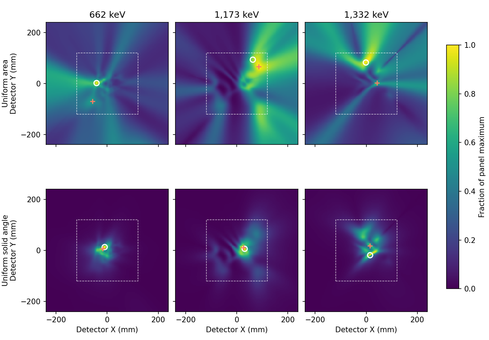
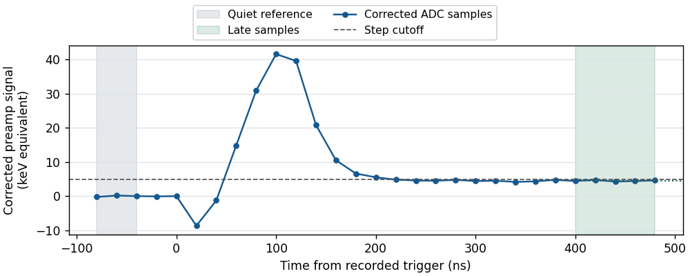

Historical GeGI study
GeGI historical source-plane prior study
Before: Four-acquisition conditional imaging introduces candidate cones on a different dataset. Here the next question is how a spatial prior changes the image of the historical four-window sample.
This historical comparison uses the same 324 measured two-strip triggers from four independent 250 ms windows. It compares source-plane support, priors, unresolved alternatives and endpoint diagnostics.
Accumulating one second of Compton backprojection
Four independent 250 ms simulated acquisitions form two disjoint half-second samples. The pooled row sums both halves without rescaling their weights. The three columns select measured energy within ±2% of each displayed line. These maps use measured energies and waveform-fit depths at strip centers on an assumed plane at z = 40 mm with X and Y spanning ±120 mm. The model uses a nominal 5° angular width plus strip-position uncertainty. All panels share a scale in projected trigger weight per 4 × 4 mm cell.

| Exposure | Qualified ADC time | All energies | 661.657 keV | 1173.23 keV | 1332.49 keV |
|---|---|---|---|---|---|
| First half · 0.5 s | 453.483 ms | 145/184 triggers 221 hypotheses | 29/37 triggers 57 hypotheses | 11/19 triggers 19 hypotheses | 8/19 triggers 12 hypotheses |
| Second half · 0.5 s | 452.636 ms | 109/140 triggers 150 hypotheses | 20/30 triggers 36 hypotheses | 12/15 triggers 16 hypotheses | 5/5 triggers 10 hypotheses |
| Pooled · 1 s | 906.120 ms | 254/324 triggers 371 hypotheses | 49/67 triggers 93 hypotheses | 23/34 triggers 35 hypotheses | 13/24 triggers 22 hypotheses |
The pooled sample includes 3,905 qualified triggers, including 324 two-strip triggers. Each two-strip trigger shares at most one unit of weight across compatible strip pairings and allowed interaction orders. The pooled map leaves 70 units unresolved. The split shifts and boundary maxima leave source positions unresolved on this plane. Detector sensitivity is uncalibrated. View the acquisition counts and source hashes (JSON).
How the source-plane prior changes the image
Each 4 × 4 mm cell receives equal initial weight under uniform area. Under uniform solid angle, a cell receives the angular area it subtends at the detector center (0, 0, 0) mm. A central cell at z = 40 mm subtends a larger angle than a distant cell of the same size. Each measured cone is normalized separately over the chosen square. The waveform fits, competing interaction orders and their weights are shared by both models.

| Energy window | Prior | 1 s peak shift on widening | 1 s peak shift on widening, then cropping | Half-to-half, ±120 mm | Half-to-half, ±240 mm |
|---|---|---|---|---|---|
| 662 keV | Uniform area | 0.0 | 0.0 | 190.5 | 73.8 |
| 662 keV | Uniform solid angle | 0.0 | 0.0 | 11.3 | 11.3 |
| 1,173 keV | Uniform area | 188.2 | 188.2 | 217.3 | 36.9 |
| 1,173 keV | Uniform solid angle | 0.0 | 0.0 | 0.0 | 5.7 |
| 1,332 keV | Uniform area | 5.7 | 5.7 | 121.5 | 91.3 |
| 1,332 keV | Uniform solid angle | 0.0 | 0.0 | 36.0 | 36.0 |
Of 254 projected trigger units in the wider field, the central square retains 55.67 with uniform area and 166.48 with uniform solid angle. The angular prior concentrates weight toward the detector axis. The 662 keV example shows the distinction between repeatability and accuracy. The wider-field peak moves from (−42, 2) mm to (−10, 14) mm when switching to uniform solid angle. The programmed Cs-137 position was (−40, 0) mm, withheld from fitting. Half-to-half agreement improves even as this pooled peak moves farther from the source.
Which triggers move the line-window peaks?
On the ±120 mm uniform-area image, two triggers contributed 41.9% of the 1,173 keV maximum cell. Setting them aside moved the maximum 236 mm to the opposite edge. On the ±240 mm uniform-area image, that maximum stayed at (86, 70) mm. The 1,332 keV maximum moved 59.5 and 60.0 mm on the two respective area footprints. All pooled 662 keV peaks and all three pooled solid-angle peaks stayed in their original cells.
Peak coordinates, half-exposure shifts and pair comparisons
Three simulated charge-collection intersections label 15 trigger occurrences from 10 distinct archived histories. Two are in each line window, out of 49, 23 and 13 projected triggers in energy order. The full image includes all 324 measured triggers, 371 projected orders and 70 unresolved trigger units. The diagnostic sets aside only the labeled contributions and keeps every other order at its original weight. See the endpoint comparison.
| Energy window | Prior | Field | Peak X, Y | Peak move (mm) | Share at original peak | Half-to-half distance (mm) |
|---|---|---|---|---|---|---|
| 662 keV | Uniform area | ±120 mm | (−42, 2) → (−42, 2) | 0.0 | 2.96% | 190.5 → 190.5 |
| 662 keV | Uniform area | ±240 mm | (−42, 2) → (−42, 2) | 0.0 | 2.95% | 73.8 → 73.0 |
| 662 keV | Uniform solid angle | ±120 mm | (−10, 14) → (−10, 14) | 0.0 | 0.14% | 11.3 → 5.7 |
| 662 keV | Uniform solid angle | ±240 mm | (−10, 14) → (−10, 14) | 0.0 | 0.14% | 11.3 → 5.7 |
| 1,173 keV | Uniform area | ±120 mm | (94, −118) → (98, 118) | 236.0 | 41.89% | 217.3 → 39.6 |
| 1,173 keV | Uniform area | ±240 mm | (86, 70) → (86, 70) | 0.0 | <0.01% | 36.9 → 36.9 |
| 1,173 keV | Uniform solid angle | ±120 mm | (30, 6) → (30, 6) | 0.0 | <0.01% | 0.0 → 0.0 |
| 1,173 keV | Uniform solid angle | ±240 mm | (30, 6) → (30, 6) | 0.0 | <0.01% | 5.7 → 5.7 |
| 1,332 keV | Uniform area | ±120 mm | (6, 90) → (46, 46) | 59.5 | 41.21% | 121.5 → 333.8 |
| 1,332 keV | Uniform area | ±240 mm | (2, 86) → (50, 50) | 60.0 | 45.62% | 91.3 → 40.0 |
| 1,332 keV | Uniform solid angle | ±120 mm | (18, −14) → (18, −14) | 0.0 | <0.01% | 36.0 → 36.0 |
| 1,332 keV | Uniform solid angle | ±240 mm | (18, −14) → (18, −14) | 0.0 | <0.01% | 36.0 → 36.0 |
On the original uniform-area field, the cobalt pairs had the largest loss of weight at their original maximum cells among all ways to set aside two projected triggers in each window. Their displacements tied for largest in 44/253 and 7/78 pairs. The heights of the new maxima were 18.2% and 27.2% lower than the full-image maxima. Contributions at the four cells touching the programmed Co-60 source position were negligible on both footprints.
Each window had one pair from the same archived decay and block. In both decays one emitted Co-60 photon deposited its entire line energy in germanium. The other line photon contributed zero to these deposits.
| Recorded line window | Deposited in Ge | Energy by collection cell | Recorded energy and projected order (angle residual) |
|---|---|---|---|
| 1,173 keV Block 3, triggers 349 and 414 | 1,173.227 keV | X13/Y15 1,014.013 keV X16/Y10 154.388 keV X14/Y13 4.826 keV | #349 1,168.54 keV X16/Y10 → X13/Y15 (+59.8°) #414 1,168.47 keV X16/Y10 → X13/Y15 (+59.8°) |
| 1,332 keV Block 2, triggers 6 and 982 | 1,332.498 keV | X10/Y02 1,182.178 keV X09/Y06 150.191 keV X10/Y03 0.129 keV | #6 1,332.49 keV X09/Y06 → X10/Y02 (+63.4°) #982 1,332.43 keV X09/Y06 → X10/Y02 (+63.3°) |
For the 1,173 keV photon, three Compton scatters fed X13/Y15. A fourth fed the weak X14/Y13 cell, which was below threshold on both faces. At 1,332 keV, most of the first scatter fed X10/Y02. A small share, including direct deposition by the photon, collected at adjacent X10/Y03. It contributed on X10 while Y03 was below threshold. A second scatter also fed X10/Y02.
In each trigger the reconstruction orders the final photoelectric absorption cell before the dominant cell of the earlier scatters. Under the two-site, full-energy model, putting the high-energy cell first requires a Compton cosine below −1. The other X/Y pairing fails the measured energy tolerance. The angular residual is the angle between the cone axis and the direction to the programmed source, minus the energy-derived cone half-angle. The four triggers contributed four projected orders and zero unresolved units. Both 662 keV occurrences came from distinct histories. Pair comparisons can share triggers and archived histories.
How well does one half predict the other?
Each half-second map was used to predict the other half’s measured cone angles on the ±240 mm field. The comparison uses the same response model under the learned map and its own prior alone. A positive mean log ratio indicates that the learned map gives the held-out cones greater average log response. Across 324 selected triggers, the mean log ratio per trigger was -0.011 for uniform area and +0.142 for uniform solid angle, each relative to its own baseline. The 70 fully unresolved triggers contributed zero to the difference.
The solid-angle prior alone puts 83.7% of its weight in the central square. The two half-second maps place 70.2% and 59.3% there. Both spread weight outward while improving agreement with the other half. This checks consistency with independent simulated signals under the assumed angular response. Peak coordinates, counts, comparisons and study hashes (JSON).
Weak strip signals in two-strip triggers
The fixed late-step diagnostic flagged 2/59 evaluated triggers with no energy-compatible X/Y pairing and 5/265 with at least one. All 59 incompatible triggers had simulated carrier endpoints at three or four strip intersections (56 and 3, respectively). Among the compatible triggers, 15/265 occupied three or more intersections.
Exposure counts, matched carrier evidence and ADC samples
| Exposure | X/Y energy pairing | Windows | Evaluated | Unevaluable | Windows flagged | Strips flagged |
|---|---|---|---|---|---|---|
| First half | All | 184 | 184 | 0 | 1 | 1 |
| First half | No compatible pairing | 31 | 31 | 0 | 1 | 1 |
| First half | At least one compatible pairing | 153 | 153 | 0 | 0 | 0 |
| Second half | All | 140 | 140 | 0 | 6 | 9 |
| Second half | No compatible pairing | 28 | 28 | 0 | 1 | 1 |
| Second half | At least one compatible pairing | 112 | 112 | 0 | 5 | 8 |
| Pooled | All | 324 | 324 | 0 | 7 | 10 |
| Pooled | No compatible pairing | 59 | 59 | 0 | 2 | 2 |
| Pooled | At least one compatible pairing | 265 | 265 | 0 | 5 | 8 |
Among the compatible triggers, 0/2 with two allowed X/Y assignments had a flag. The study retains both X/Y alternatives and the original weight of every trigger. The plane comparison still accounts for 254 projected and 70 unresolved trigger units.
| X/Y energy pairing | Windows with native reference | Flagged strips compared | Comparable weak landings | Detected landings | Missed landings | Weak landings unevaluable by ADC | Induction only |
|---|---|---|---|---|---|---|---|
| All | 324 | 10 | 9 | 9 | 0 | 0 | 0 |
| No compatible pairing | 59 | 2 | 2 | 2 | 0 | 0 | 0 |
| At least one compatible pairing | 265 | 8 | 7 | 7 | 0 | 0 | 0 |
10/10 flags had at least one carrier landing in their matched group. The diagnostic detected 9/9 comparable landings inside the band, with 0 misses. One strip crossed the 0.613 keV-equivalent detection floor with 0.578 keV at the carrier endpoint versus 0.763 keV equivalent from the ADC. The 10 flagged strip observations came from 6 distinct archived groups and 8 distinct group and strip combinations.
Summing the simulated deposits by the saved carrier endpoints and applying the original energy tolerance to the same four strips reproduced the exact compatible X/Y alternatives for 324/324 triggers. Among the 57 incompatible triggers without a weak-step flag, the four measured strips accounted for all endpoint charge, across 54 three-intersection and 3 four-intersection patterns. These intersections come from simulated carrier endpoints.
A weak landing means that the total deposited energy of the rows with a saved carrier endpoint on that strip is in the diagnostic amplitude band. The simulation also provides the signed induced signal. With no endpoint on a strip, a terminal or transient signal can still arise from motion of carriers collected elsewhere. The comparison requires one uniquely assigned group with usable saved native records and no additional native current on the window. The table classifies induction-only flags at the modeled sensitivity scale.

The test uses the original 5-sigma noise criterion and the 5 keV collection cutoff. It compares the mean of five late samples (+400 to +480 ns from the trigger) with the quiet reference after correcting for the nominal preamplifier decay. The first late sample must follow the end of the recorded rise by at least 120 ns. The first and last pairs of late samples must have means within 0.845 keV equivalent of each other. These frequencies describe the simulated readout in the saved windows.
Open trigger identities, amplitudes, counts and source hashes (JSON).